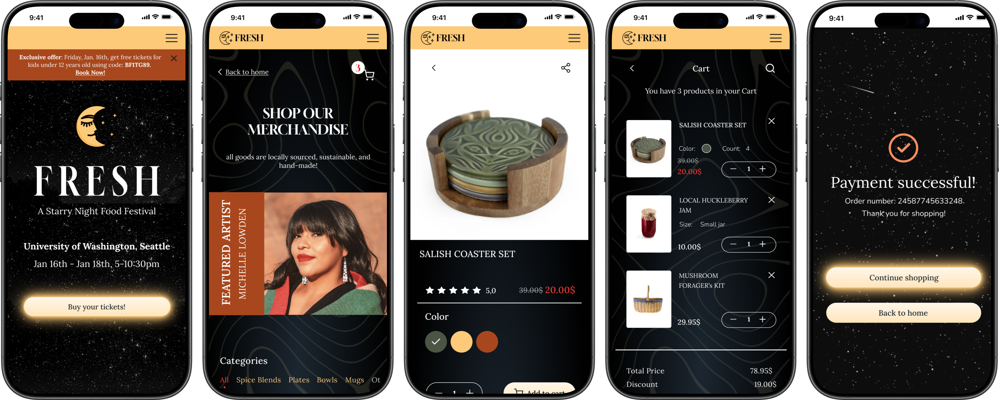
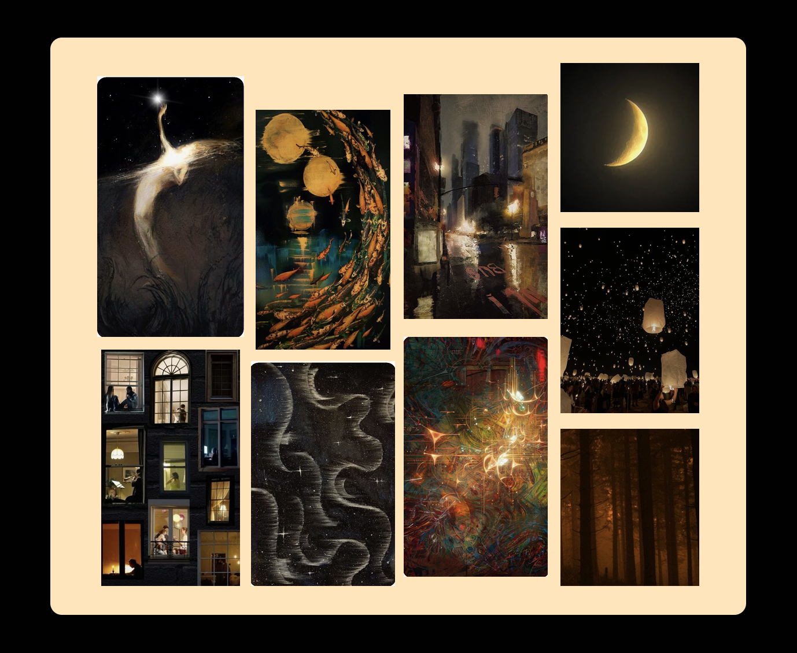
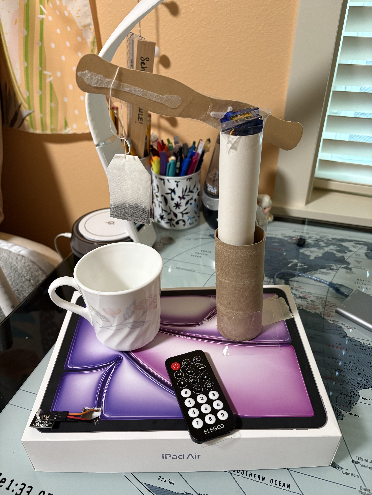
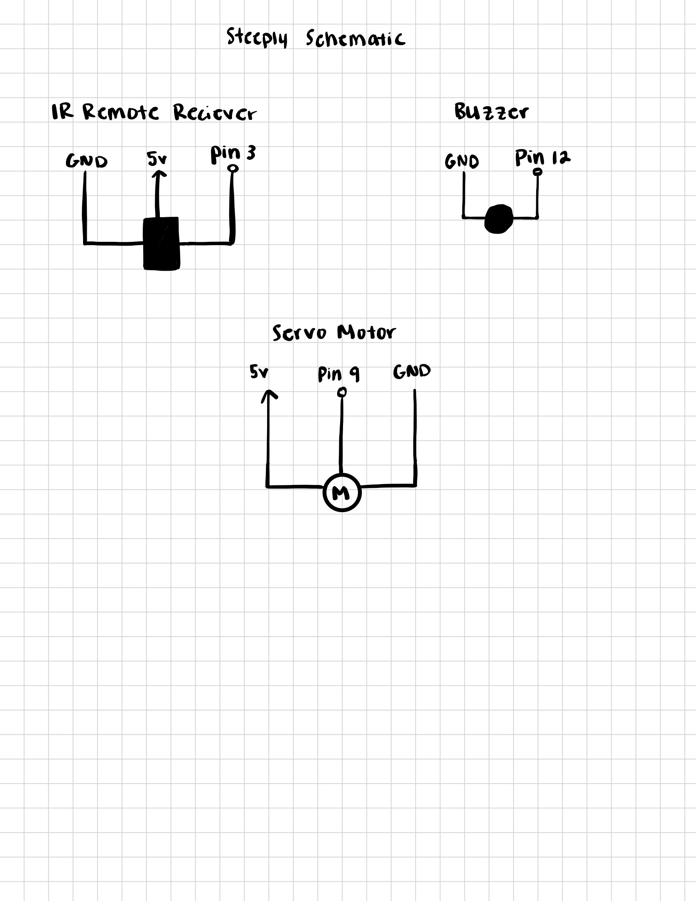
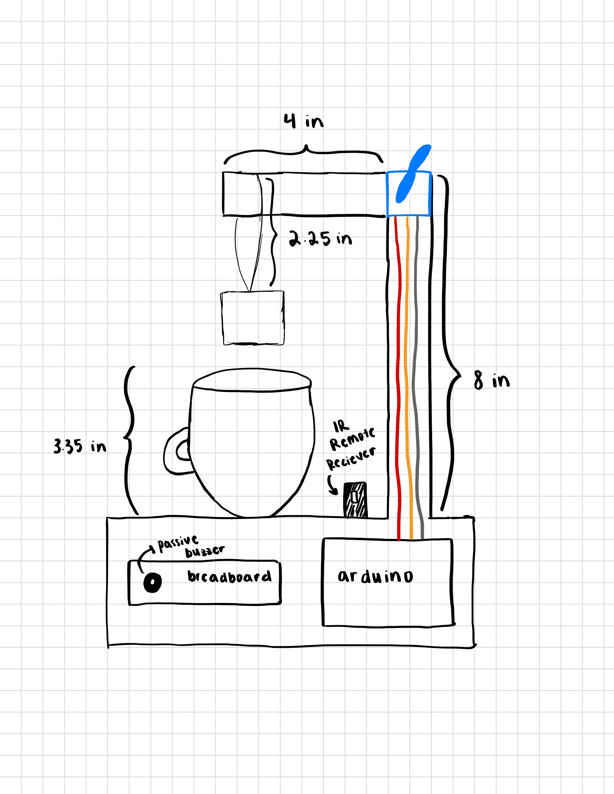
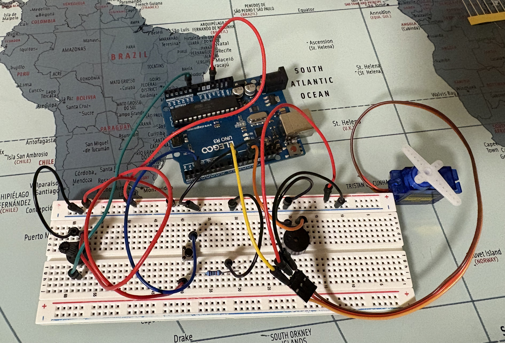

FRESH
Starry Night Food Festival
Event branding and visual identity for an evening food festival. I explored atmosphere, typography, and color for an imaginary food festival.





A collection of visual explorations, creative concepts, and experiments.
FRESH
Event branding and visual identity for an evening food festival. I explored atmosphere, typography, and color for an imaginary food festival.


Steeply
An Arduino-powered tea steeper that brews different types of tea. Select green, herbal, or black tea on the IR remote (each triggers a preset steep time), then press play. A servo motor lowers the teabag, waits, lifts it out. A buzzer signals when it's ready.



